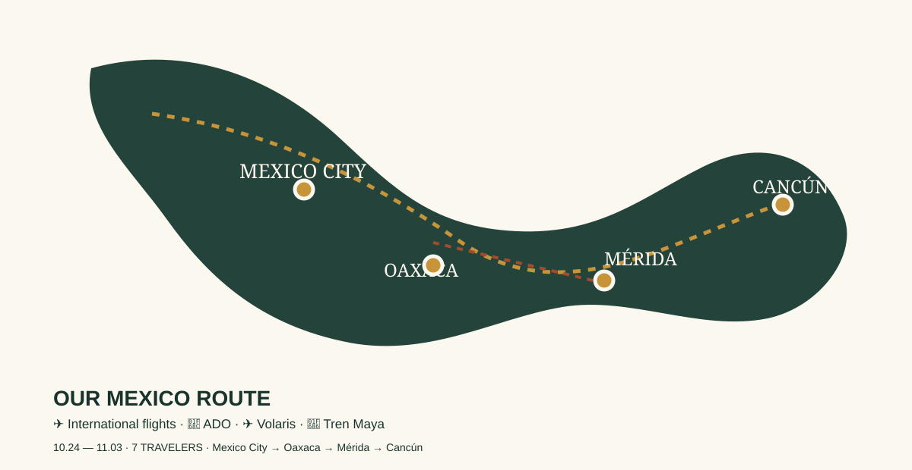

PHOTO
Risa
TRAVEL CREW
A beautifully organised travel journal for our Day of the Dead journey — part itinerary, part field guide, part memory book.
Confirmed backbone for the trip; optional sights stay clearly marked so the plan can evolve.

UA872 · 09:50 → 06:35 (+0) · ~11h45
Boeing 777 · SFO connection ~4h15
UA1271 · 10:50 → 16:15 · ~4h25
Boeing 737 MAX 8
UA1948 · evening departure · details to be finalised
Return itinerary may vary by traveler
Mexico City · private stay
Price intentionally omitted for the final cost sheet.
Oaxaca · 7 travelers
Price intentionally omitted for the final cost sheet.
Mérida · 7 travelers
Price intentionally omitted for the final cost sheet.
Keep voices low in cemeteries, ask before photographing people, never touch graves or ofrendas, and avoid treating ritual spaces like party sets.
Night transport and valuables: plan as a group.
11/03 · 07:00 → 11:31
Clase Premier · Reservation EC4911346
MX$1,250 per person
7 travelers · total MX$8,750
Ticket includes one suitcase + one hand luggage per person.
Passport · entry documents · insurance · booking confirmations · offline copies.
Mexico uses Type A/B outlets and 127V/60Hz. Check each device input.
Comfortable shoes · light layer · rain protection · sunscreen · hat · Catrina accessories.
Two cards from different banks + some MXN cash. Keep a backup card separate.
eSIM/data plan · keep Taiwan SIM available for SMS/OTP if needed.
Cemetery / late-night events: group transport, valuables secured, phones charged.